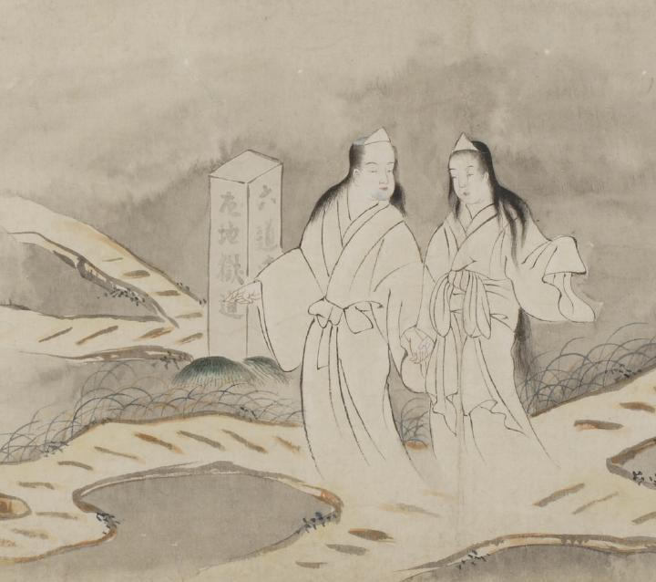

ふたり連れの幽霊。三途の川端を歩く男女で、手をつないでいる。ともに足がなく、長い髪の毛である。男の幽霊にはうすく青ひげが生えている。白い死装束の姿に、白い三角頭巾を頭に巻いている。六道の辻にさしかかり、これから地獄へむかうようである。
出典：親書誌：U426_nichibunken_0058：地獄草紙絵巻；ジゴクゾウシエマキ／日付：2006／資源識別子：U426_nichibunken_0058_0001_0000
Copyright (c)2010- International Research Center for Japanese Studies, Kyoto, Japan. All rights reserved.